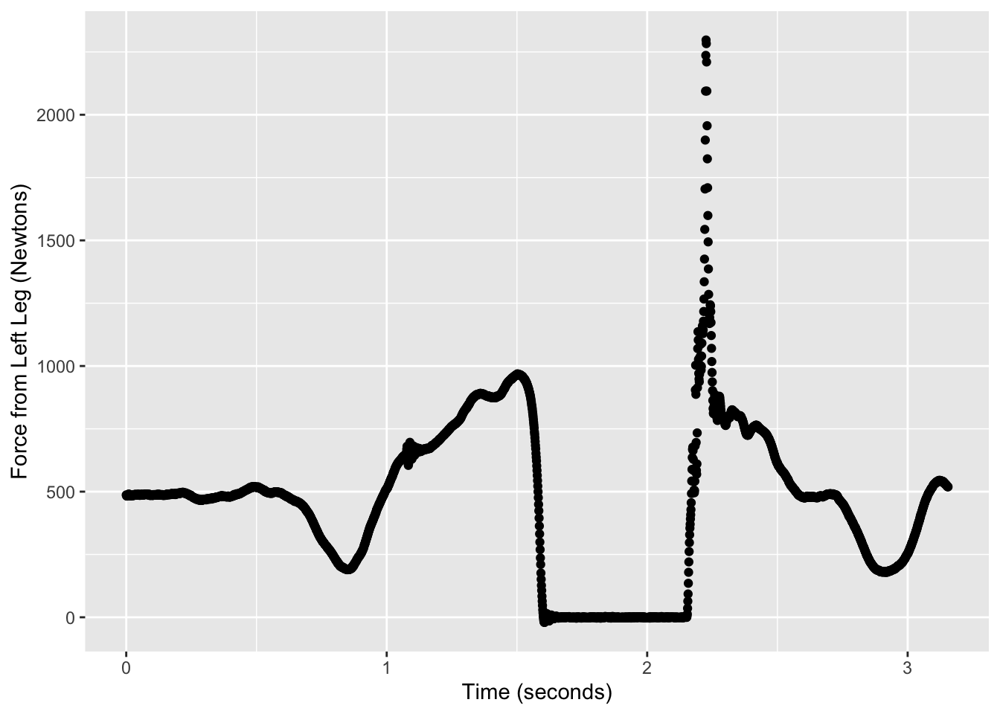
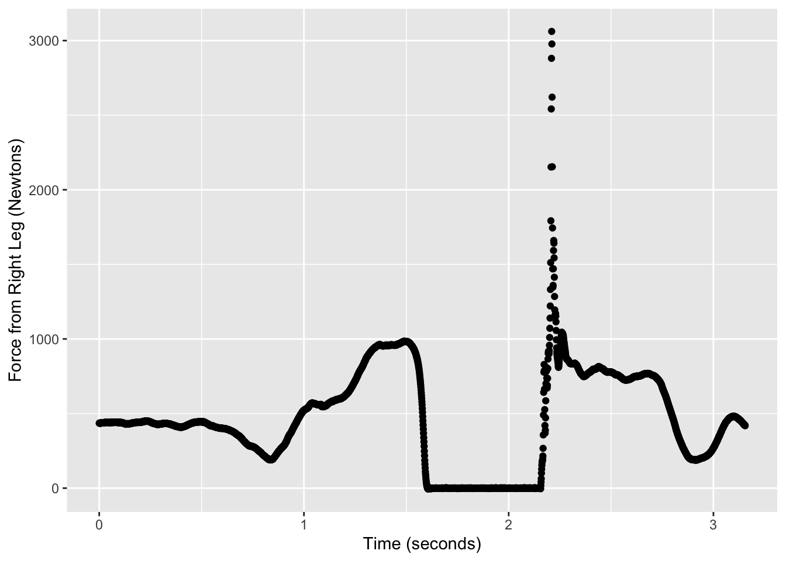
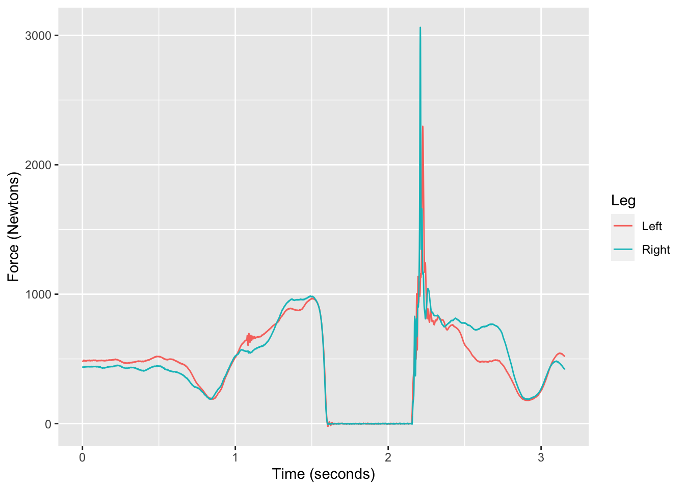
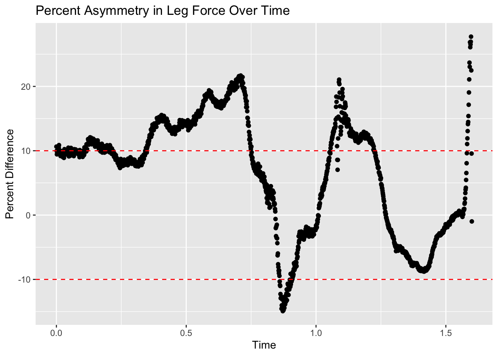
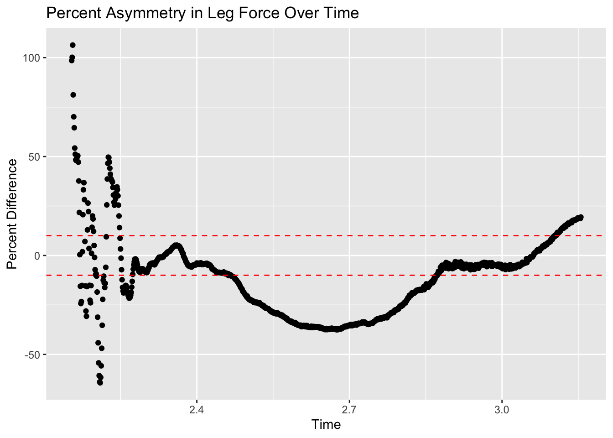

Force production asymmetry between limbs is often used as a predictor of future injury, with asymmetries greater than 10-15% being considered at risk (1). Increased symmetry as a result of rehabilitation can also be used as a marker of success (1). Although used as a predictor of future injury, especially in ACL rehab patients (2), the effect of interlimb force production asymmetry is less clear as it relates to performance. A systematic review (1) evaluating the effects of inter-limb asymmetries on physical and sports performance found a high rate of asymmetry across a range of physical quantities. While not a consistent finding, they also concluded that asymmetry has a detrimental effect on performance. Single leg and horizontal jumps have been shown to detect asymmetries, but their effect on Change of Direction performance appears inconclusive. Some studies have even shown a positive impact of asymmetry in cycling (3) and no effect in swimming (4). During bilateral jumping tasks, it has been shown that a significant difference in the asymmetry between landing and take off phases exists (5).
The counter-movement jump (CMJ) is divided into 5 phases with different biomechanical demands: Unweighing, Braking, Propulsion, Flight, and Landing. This project aimed to calculate the average asymmetry between limbs during each phase, as well as visualize the change in asymmetry across the course of the jump. By relating the asymmetry score to the phase being performed, corrective exercise mimicking the demands of that phase may be implemented in an attempt to restore symmetry.
Methods
Data from a single CMJ performed by a 28 year old recreational hockey player was collected on a Vault force plate at a sampling rate of 1000 Hz at the USC Clinical Exercise Research Center on September 2, 2022. The data was exported to a csv file, and initially included 3136 observations and 22 variables. After importing the data in R using the function read.csv, the combined function mean(is.na) was used to confirm no missing data for the variables representing the force produced in the Z direction for the left and right legs.
rm(list=ls())library(ggplot2)data <-read.csv("CJ CMJ-Countermovement Jump-2022.09.02-10.33.20-Trial1 - CJ CMJ-Countermovement Jump-2022.09.02-10.33.20-Trial1.csv",skip=9)mean(is.na(data$Z.Left))
[1] 0
mean(is.na(data$Z.Right))
[1] 0
The variable “time” was then shifted to 0 by subtracting the minimum value from each observation for this variable.
# Change time to normalize to 0data$Time <- data$Time -min(data$Time)
In order to first visualize the data, forces produced by both the right and left legs in the Z direction were plotted. This visualization was accomplished by first rearranging the data to only include the forces produced by the two limbs in the Z direction, as well as an added variable that differentiated between right and left limb. This rearrangement was accomplished by using the function data.frame() to create two separate data frames for the right and left limbs, each containing the variables Time, Force, and Leg. These data frames were then stacked together using the function rbind(). After this data wrangling, ggplot2 was used to convert the stacked data frame into a line graph that plotted the forces produced by both limbs against time, differentiating by color. Individual point plots for the right and left limbs were also generated for reference.
T <-nrow(data)# re-arrange data to be able to plot left leg against right legdata_tidy <-data.frame(Time=data$Time, Force=data$Z.Left, Leg="Left")data_tidy <-rbind(data_tidy, data.frame(Time=data$Time, Force=data$Z.Right,Leg="Right"))plot_left <-ggplot(data, aes(x=Time, y=Z.Left)) +geom_point() +ylab("Force from Left Leg (Newtons)") +xlab("Time (seconds)")plot_right <-ggplot(data, aes(x=Time, y=Z.Right)) +geom_point() +ylab("Force from Right Leg (Newtons)") +xlab("Time (seconds)")plot_both <-ggplot(data_tidy, aes(x=Time, y=Force, color=Leg)) +geom_line() +ylab("Force (Newtons)") +xlab("Time (seconds)")
Next, the goal was to first break down the data into Standing, Unweighing, Braking, Propulsion, and Landing phases, and calculate the average absolute asymmetry for each phase. The phases were defined based on values from the acceleration variable in the dataset. First, an acceleration vs time plot was generated using ggplot2 to visualize how the acceleration changed throughout the CMJ.
Using this plot as a guide to read through the data, observations with an acceleration value of 0 were characterized as Standing (indices 1-592), negative accelerations as Unweighing (indices 593-973), and positive accelerations as Braking (indices 974- 1374). The Propulsion phase was defined as the time points between when the acceleration reached its first peak and then started the decline until the time in air (indices 1375:1601). The flight phase was omitted due to lack of relevance. The Landing phase was defined as when the acceleration started meaningfully increasing from -9.8 m/s^2 until the last observation (indices 2155 - nrow(data)).
The average absolute asymmetry for each phase was calculated by first inserting a new variable into the data that described the absolute difference between the force produced in the right and left limbs. This was accomplished by taking the absolute value of the force produced by the left limb subtracted from the right limb, and dividing this quantity by the maximum of these two values for each observation (using the function pmax). This quantity was then multiplied by 100 to give a percent value. The average asymmetry for each phase was then calculated by using the mean function on data extracted by each phase’s corresponding indices.
# Calculate the percentage difference between force from left and right legs# in the z direction at each timedata$pct_diff <- (data$Z.Left - data$Z.Right)/pmax(data$Z.Left, data$Z.Right)*100data$abs_pct_diff <-abs(data$Z.Left - data$Z.Right)/pmax(data$Z.Left, data$Z.Right)*100# Average absolute asymmetry during standing phase:avg_standing_asymmetry <-mean(data[standing_inds, "abs_pct_diff"])# Average absolute asymmetry during unweighting phase:avg_unweighting_asymmetry <-mean(data[unweighting_inds, "abs_pct_diff"])# Average absolute asymmetry during breaking phase:avg_braking_asymmetry <-mean(data[braking_inds, "abs_pct_diff"])# Average absolute asymmetry during propulsion phase:avg_propulsion_asymmetry <-mean(data[propulsion_inds, "abs_pct_diff"])# Average absolute asymmetry during braking phaseavg_landing_asymmetry <-mean(data[landing_inds, "abs_pct_diff"])
Finally, the absolute percent asymmetry as a function of time was plotted. For better readability, one plot was generated for the Standing, Unweighing, Braking, and Propulsion phases, and another for the Landing phase. These plots were generated by concatenating the relevant phases from the data and using ggplot2. Dotted red lines at y-intercepts of 10 and -10 were inserted to better visualize asymmetries greater than 10%.
df_plot <- data[c(standing_inds, unweighting_inds, braking_inds, propulsion_inds), ]plot_pct_diff <-ggplot(df_plot, aes(x=Time, y= pct_diff)) +geom_point() +geom_hline(yintercept=10, color="red", linetype ="dashed") +geom_hline(yintercept=-10, color="red", linetype ="dashed") +ylab("Percent Difference") +ggtitle("Percent Asymmetry in Leg Force Over Time")landing_plot <- data[landing_inds,]landing_plot_pct_diff <-ggplot(landing_plot, aes(x=Time, y= pct_diff)) +geom_point() +geom_hline(yintercept=10, color="red", linetype ="dashed") +geom_hline(yintercept=-10, color="red", linetype ="dashed") +ylab("Percent Difference") +ggtitle("Percent Asymmetry in Leg Force Over Time")
Results
plot_left

plot_right

plot_both

plot_pct_diff

landing_plot_pct_diff

# Average absolute asymmetry during standing phase:print(paste(round(avg_standing_asymmetry, 4), "%", sep=""))
[1] "11.6348%"
# Average absolute asymmetry during unweighting phase:print(paste(round(avg_unweighting_asymmetry, 4), "%", sep=""))
[1] "11.4569%"
# Average absolute asymmetry during breaking phase:print(paste(round(avg_braking_asymmetry, 4), "%", sep=""))
[1] "8.1898%"
# Average absolute asymmetry during propulsion phase:print(paste(round(avg_propulsion_asymmetry, 4), "%", sep=""))
[1] "5.3161%"
# Average absolute asymmetry during braking phaseprint(paste(round(avg_landing_asymmetry, 4), "%", sep=""))
The subject displayed average asymmetries greater than 10% during the Standing(11.63 %), Unweighing (11.45%), and Landing phases (17.85%). Interestingly, the subject’s asymmetry decreases as they transition from passive phases (Standing and Unweighing) to power absorption and generation phases (Braking and Propulsion). The large difference between takeoff and landing symmetry coincide with results from Cone et al. Based on these results, the subject should use exercise strategies that target static balance and landing mechanics in order to reduce risk for future injury.
References
Bishop, C., Turner, A., & Read, P. (2018). Effects of inter-limb asymmetries on physical and sports performance: A systematic review. Journal of sports sciences, 36(10), 1135-1144.
Noyes, F. R., Barber, S. D., & Mangine, R. E. (1991). Abnormal lower limb symmetry determined by function hop tests after anterior cruciate ligament rupture. The American Journal of Sports Medicine, 19, 513–
doi:10.1177/036354659101900518
Bini, R. R., & Hume, P. A. (2015). Relationship between pedal force asymmetry and performance in cycling time trial. Journal of Sports Medicine and Physical Fitness, 55, 898–982.
Morouco, P. G., Marinho, D. A., Fernandes, R. J., & Marques, M. C. (2015). Quantification of upper limb kinetic asymmetries in front crawl swim- ming. Human Movement Science, 40, 185–192. doi:10.1016/j. humov.2014.12.012
Cone, S. M., & Lee, S. (2021). Lower limb force asymmetries during landing and jumping exercises: A pilot study. International Journal of Exercise Science, 14(1), 544.